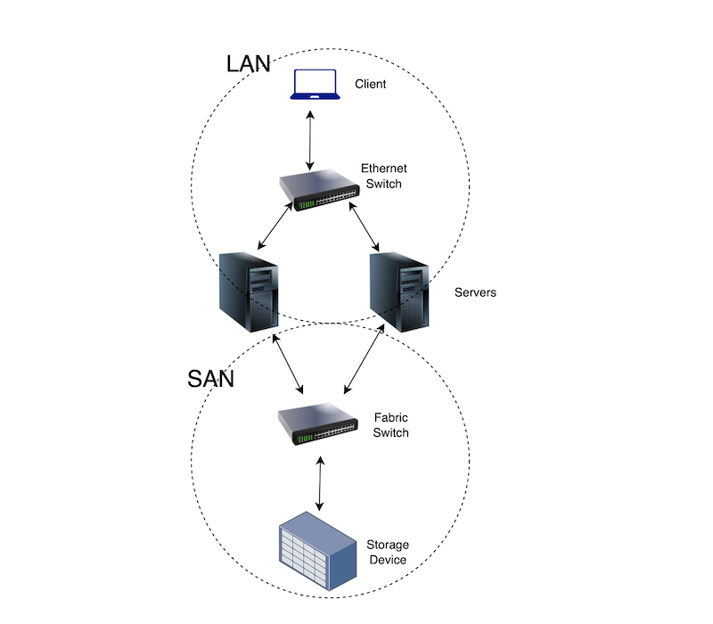
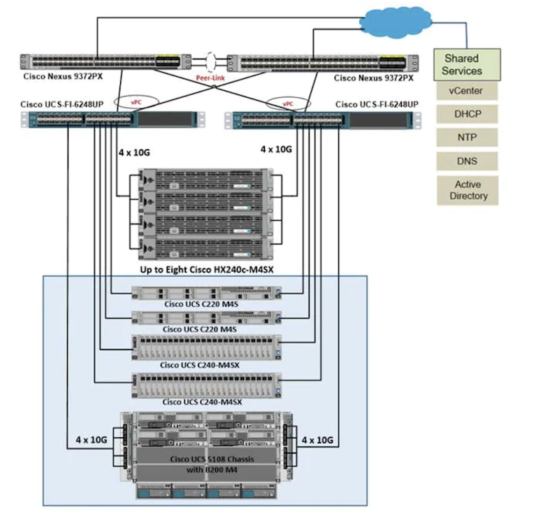
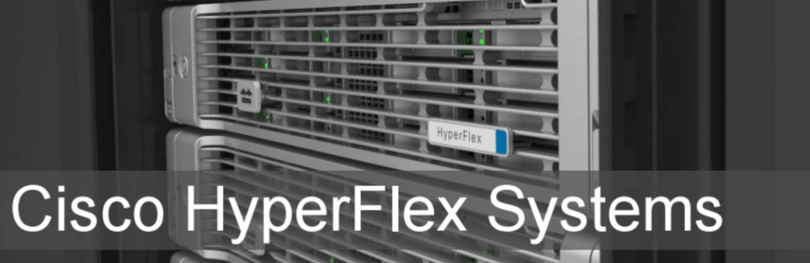

Cisco Hyperflex - Hyperconverged infrastructure (HCI)
Hyperflex is Cisco’s Hyperconverged Infrastructure (HCI) solution for Next Generation Data Centers, which provides one single solution for the configuration and management of the Compute, Storage and Network. There are generally two popular Datacenter Infrastructure Architecture solutions:
The Converged” (Popular) and the “Hyperconverged” solution
Converged Infrastructure
If you are familiar with the traditional data center architecture (Converged Infrastructure), you already know it consists of two things; “A LAN” (Local Area Network) and the “A SAN” Storage Area Network
A LAN
-
This is where the traditional Ethernet switching technology happens.The LAN consists of switches(Network) connected to Servers (Compute). In the LAN, client devices (laptops, desktops etc) can directly communicate with services (e.g. web, mail etc) that are hosted on the Servers. In a situation where the service on the Server needs to feed the client with large content (like large size video files - just an example) that requires huge storage, usually the storage capacity on the Servers are not sufficient to handle such traffic. This necessitates the need for a network, dedicated to Storage of files, Operating System boot storage, and every storable thing you can think of. When chunks of storage (LUN) from this Storage Network is set up, it is presented to the Servers as block storage and the chunk appears like it is directly attached to the Servers, while it’s not.
A SAN
-
This is a high speed network/subnetwork that helps store and consolidate block level data, in order to present data stores to Servers. This network consists of two major things:
- Fabric Switches, which are connected to the Servers, and
- the actual Storage Devices, (The monster devices that house a bunch of disks) which in turn connect to the Fabric Switches
The image below provides a sample of what the solution looks like:

Hyperconverged Infrastructure (HCI) - Hyperflex
Hyperflex is unlike the solution described above. Instead of separating the Compute (Servers), Network(Switches) and Storage as seen in the traditional architecture, HCI brings all components of the Converged architecture to one place.
A typical Cisco Hyperflex setup would consist of two Nexus 9k switches, two Cisco Fabric Interconnects (FI) to handle the Networking within the solution; and Cisco UCS B and C series servers to handle the Compute and Storage piece of the solution.

During my implementation of this solution, I found that Hyperflex (Hx) depends largely on VMware’s virtualization technology for hardware abstraction. VMware’s vCenter Server is also required in your environment for successful installation and management of Hyperflex.
Additionally, your data center will need at least an NTP server to synchronize the time on the devices, a DNS server for name resolution of all the devices and a bunch of IP addresses within different IP subnets.
On the “Networks” side of things, an engineer requires proficiency in the configuration and troubleshooting of the following data center networking protocols; Virtual Port Channel (vPC), Port Channels, a Router redundancy protocol (HSRP), InterVLAN routing (SVI) and an in depth understanding of general networking concepts.
The “Hyperflex Data Platform” (HXDP) which is Cisco’s custom HCI software (can be downloaded from the cisco.com download page), must be run to configure all the available hardware devices (and servers preinstalled with VMware's ESXi hypervisor of course) participating in the Hyperflex instance - automating the configuration of Service Profiles, Pools, Templates and other fancy stuff on the Servers and Fabric Interconnects (FI)
I also found that Hyperflex is a delicate solution and the versions of all the devices and softwares used (ESXi, vCenter, HXDP, Fabric Interconnect Firmware, UCS servers Firmware etc) must be mutually compatible, hence it is highly recommended that you read the Cisco Hyperflex Datasheet for the specific version of hyperflex which you are trying to implement in your datacenter environment.
At completion of setup, the Cisco “Hyperflex Connect” platform is used for management of the entire solution (together with vCenter). However; device, datastore and virtual machine management can also be done through the cloud if you are able to claim and connect your environment to the Cisco Intersight platform.

To find out more about Cisco Hyperflex, you can check out the following cisco LIVE documentation available here https://www.ciscolive.com/c/dam/r/ciscolive/apjc/docs/2020/pdf/BRKCOMv-1110.pdf
Enjoy the hyperconverged adventure